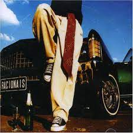
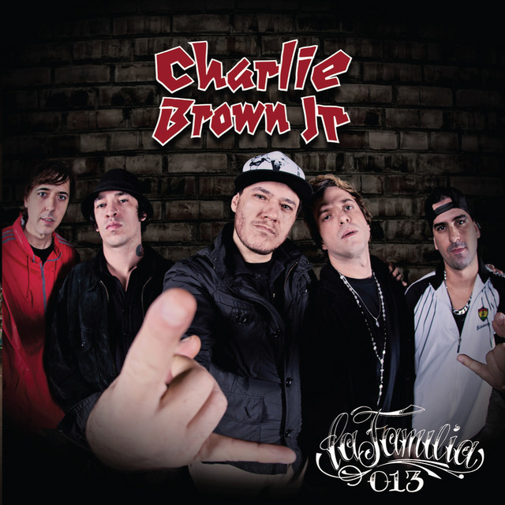
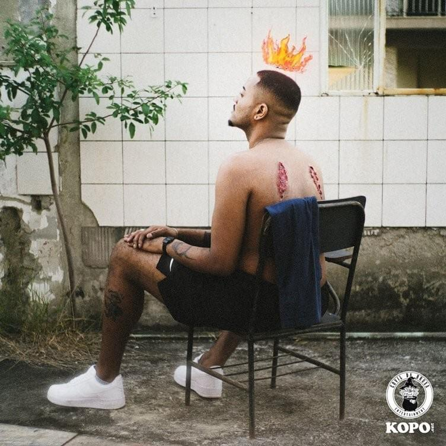

Nacional
 1
1
Apesar de Você (1978) -
Chico Buarque
Chico Buarque
 2
2
Índios (1986) -
Legião Urbana
Legião Urbana
 3
3
Só Por Uma Noite (2002) -
Charlie Brown Jr.
Charlie Brown Jr.
 4
4
As coisas tão mais lindas (2019) -
ANAVITÓRIA
ANAVITÓRIA
 5
5
A Ordem Natural das Coisas (2019) -
Emicida
Emicida

6
Vida Loka Pt.2 (2002) -
Racionais MC's
Racionais MC's
7
Medo Bobo (2019) -
Rubel
Rubel
 8
8
Cançao Pro Meu Filho (2018) -
Djonga
Djonga

9
Meu Novo Mundo (2013) -
Charlie Brown Jr.
Charlie Brown Jr.
 10
10
Amanhecer (2022) -
BK
BK
11
Capitão Gancho (2013) -
Clarice Falcão
Clarice Falcão
 12
12
Anos Luz (2017) -
Matuê
Matuê
13
Tempo Perdido (1986) -
Legião Urbana
Legião Urbana
14
Pra Você Guardei O Amor (1986) -
Nando Reis
Nando Reis
15
Desenho De Deus (2007) -
Armandinho
Armandinho
16
O Mundo é Tão Pequeno (2012) -
Jorge & Mateus
Jorge & Mateus
 17
17
Hino Vira-Lata (2012) -
Emicida
Emicida
18
Dutumob (2012) -
Filipe Ret
Filipe Ret
 19
19
Déjà Vu (2005) -
Pitty
Pitty
20
Você Está Com Febre? (2023) -
Febre90s
Febre90s
 21
21
O que sobrou do céu (1999) -
O Rappa
O Rappa

22
Sobrevivendo ao Inferno (2021) -
VND
VND
23
Como Tudo Deve Ser (2001) -
Charlie Brown Jr.
Charlie Brown Jr.
 24
24
Quem vai dizer tchau (2019) -
ANAVITÓRIA
ANAVITÓRIA
25
Última Vida Submarina (2017) -
Giovani Cidreira
Giovani Cidreira
 26
26
Amores, Vícios e Obsessões (2016) -
BK
BK
27
Presente De Um Beija-Flor (1998) -
Natiruts
Natiruts
28
Eterno (2018) -
Djonga
Djonga
29
Capítulo 4, Versículo 3 (2018) -
Racionais MC's
Racionais MC's
30
Coisas Que Eu Sei (2008) -
Jorge Vercillo
Jorge Vercillo
31
Chove Chuva (1963) -
Jorge Ben Jor
Jorge Ben Jor
 32
32
Sozinho (1998) -
Caetano Veloso
Caetano Veloso
 33
33
Construção (1971) -
Chico Buarque
Chico Buarque
 34
34
Bluesman (2018) -
Baco Exu do Blues
Baco Exu do Blues
 35
35
Não Existe Amore em SP (2011) -
Criolo
Criolo
 36
36
Jesus Chorou (2002) -
Racionais MC's
Racionais MC's
37
Ainda Gosto Dela (2008) -
Skank
Skank
38
Flores e Facas (2022) -
Murica
Murica
39
Canão Foi Tão Bom (2016) -
Sabotage
Sabotage
40
Meu Lugar (2007) -
Arlindo Cruz
Arlindo Cruz
41
Maus Bocados (2013) -
Cristiano Araújo
Cristiano Araújo
42
Favela Vive 5 (2023) -
ADL
ADL
 43
43
A Gente Junto (2018) -
ANAVITÓRIA
ANAVITÓRIA
 44
44
Exagerado (1985) -
Cazuza
Cazuza
45
Brazil (2022) -
Kyan
Kyan
46
Carta Aberta (2022) -
BK
BK
47
Lugar Ao Sol (2013) -
Charlie Brown Jr.
Charlie Brown Jr.
48
Como Nossos Pais (1976) -
Elis Regina
Elis Regina
49
Em Quase Tudo (2022) -
Djonga
Djonga
50
Intro (2020) -
pumapjl
pumapjl